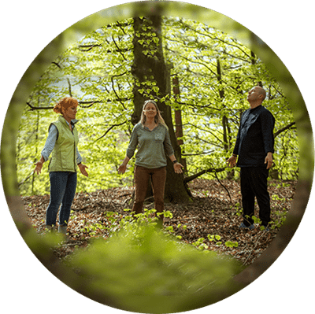

Velkommen til Akupunktur Charlotte Kuszon
Professionel akupunktur i Rungsted med holistisk tilgang
Der behandles med akupunktur og healing.
Hvorfor patienter vælger mig
Holistisk behandling
Jeg behandler hele kroppen – ikke kun symptomet. Iris- og posturologiundersøgelse er inkluderet i din første behandling.
25+ års erfaring
Praktiserende akupunktør siden 1998, RAB-registreret og medlem af Danske Akupunktører.
Bred specialisering
Fra smerter og migræne til høfeber og hormonforstyrrelser – jeg finder den rette behandling til dig.
Eksisteret siden 1998
Gamle traditioner i et moderne samfund
TKM (Traditionel Kinesisk Medicin), eller TCM som man normalt siger, stammer oprindelig fra en flere tusind år gammel kinesisk kultur og livsfilosofi. I det gamle Kina oplevede man værdien af et godt helbred og en fornuftig livsstil. Dette stiler jeg også efter.
I min behandling tager jeg mig af hele kroppen, en holistisk behandling hvor ikke blot symptomet bliver behandlet. Patienten stilles derfor en lang række spørgsmål vedrørende helbredsmæssige tilstand, ligesom jeg laver en irisanalyse, som kan hjælpe til at stille den rigtige diagnose.
Akupunktur kan hjælpe mennesket af, med mange sygdomme, uden brug fra syntetiske eller kemiske midler.
Medlem af Danske Akupunktører
Bestil tid til akupunktur i Rungsted
Hvis du er interesseret i at bestille tid til akupunktur i Rungsted, eller vil høre mere om akupunktur som behandlingsform, så er du meget velkommen til at kontakte mig for en uforpligtende samtale.
Har du yderligere spørgsmål, er du velkommen til at skrive en mail på ckuszon@akupunktoeren.com eller ringe til mig på telefon 31 60 88 80.

Om klinikken
Erfaring og faglighed du kan stole på
Charlotte Kuszon har praktiseret akupunktur i Rungsted siden 1998 og er RAB-registreret og godkendt gennem Danske Akupunktører – en brancheforening godkendt af Sundhedsstyrelsen. Bag klinikken ligger mere end tre årtiers efteruddannelse inden for traditionel kinesisk akupunktur, posturologi, øreakupunktur og zoneterapi, og alle behandlinger tilrettelægges individuelt ud fra en samlet vurdering af hele kroppen – ikke kun symptomet.
Siden 1998
Mangeårig erfaring med akupunktur og holistisk behandling i Rungsted.
RAB-godkendt
Registreret Alternativ Behandler, godkendt via Danske Akupunktører.
Bred uddannelse
TCM, posturologi, øreakupunktur og zoneterapi gennem mere end 30 år.
Tilskud muligt
Flere sundhedsforsikringer, bl.a. "danmark", giver tilskud til behandlingen.
Kontakt
Bus linje 375 + 381 kører lige til døren.
Jeg ligger ganske tæt på Rungsted station.
- Få svar på din henvendelse inden for 1-3 hverdage
- Erfaren fagperson med mangeårig erfaring
Har du spørgsmål eller ønsker du et tilbud?
Kontakt mig allerede i dag for kompetent sparring og rådgivning ved din behandling.